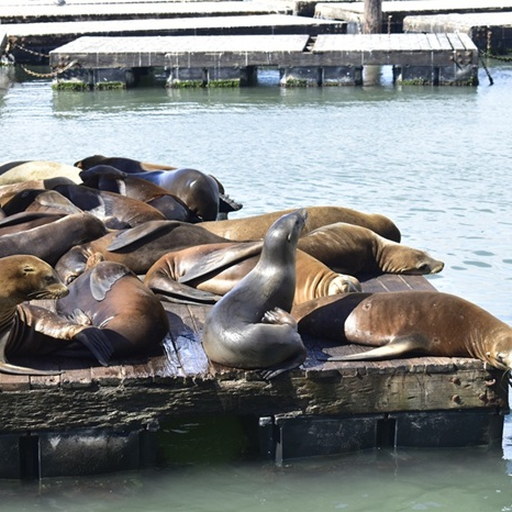
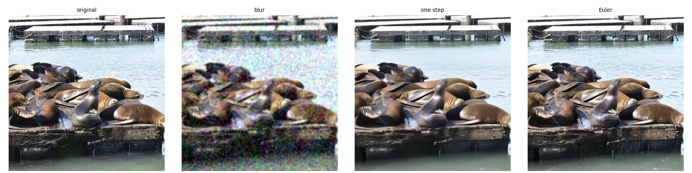

Part A: Exploring the Power of Flow Models
1. Visualizing Training and Sampling
1.1 Constructing Noisy Training Inputs
The first step is to create our training inputs by interpolating between a noisy image and the final image at different times using the equation: \[ x_t = t \times x_1 + (1 - t) \times \epsilon \]
def interpolate(image, noise, t):
return t * image + (1 - t) * noise

1.2 Classical Denoising
A naive approach to denoising is to simply divide the image by it's t value. to extract \( x_1 \). However, this would give us \( \frac{x_t}{t} = x_1 + \frac{(1-t)}{t} \epsilon \), drastically amplifying the noise. To help mitigate this, we can apply a low-pass filter using a Gaussian blur. The results are shown below


These images show that this approach is ineffective, especially when starting from low t values.
1.3 One-Step Denoising
A better approach is to use flow matching. We can use the providedpredict_velocity(x,t,condition)
function to implement a one-step image update:
\[ x̂_1 = x_t + (1 - t) \times v_{\theta}(x_t, t, c) \]
def one_step_denoise(x, t, condition, predict_velocity):
return x + (1-t) * predict_velocity(x, t, condition)

t_start = 0.25

t_start = 0.50

t_start = 0.75
1.4 Visualizing Velocity
We can compare the predicted images to the actual image to get an idea of how this approach lacks. Based on the error graphs, we can see that as t increases, the error drops. Additionally, the error tends to exist at high frequency regions of the images (i.e. edges).
Original Image


1.5 Iterative Denoising with Euler Sampling
Rather than taking one large step, we can take multiple smaller steps to reduce the error.
def euler_sample(x_start, t_start, step_size, velocity):
x = x_start.detach()
t = t_start
trajectory = [(t, x)]
while t < 1.0:
dt = min(step_size, 1.0 - t)
x = (x + dt * velocity(x, t)).detach()
t = t + dt
trajectory.append((t, x))
return x, trajectory


1.6 Generating Images from Noise
By setting t_start = 0 and x_start to some random noise, we can use this flow model to generate images. Below are some images generated from the flow model, with the only conditional being "a high quality photo".
2. Conditional Generation and Guidance
2.1 Classifier-Free Guidance (CFG)
To improve the generated images as compared to 1.6, we can use CFG, which uses the difference between the conditional and null-conditional update steps to better align the image output to the prompt. The formula for this is: \[ v_{cfg} = v_c + w(v_c - v_u) \], where \( v_c \) is the conditional velocity, \( v_u \) is the null conditional velocity, and \(w\) is some weight.
def cfg_velocity(x, t, condition, w, predict_velocity, null_condition=''):
v_c = predict_velocity(x, t, condition)
v_u = predict_velocity(x, t, null_condition)
return v_c + w * (v_c - v_u)

3. Creative Applications
3.1 Image-to-Image Editing
TODO


3.2 Text-Guided Image Editing
TODO


3.3 Visual Anagrams
TODO

3.4 Hybrid Images
TODO